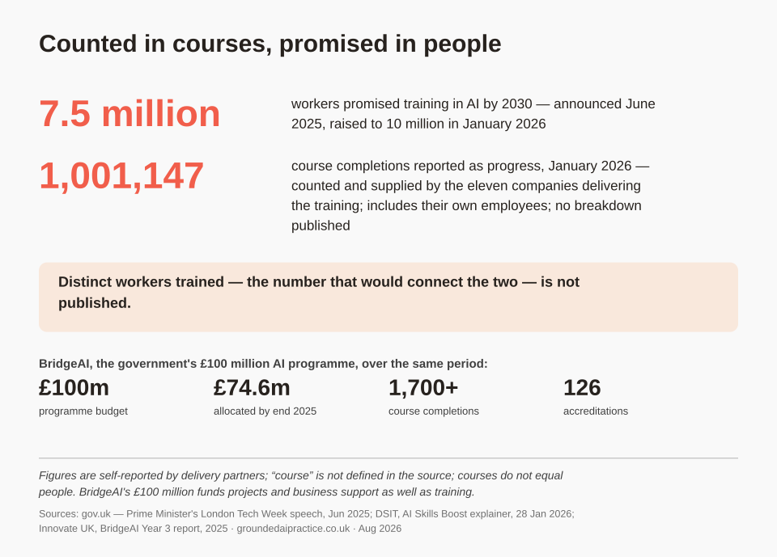
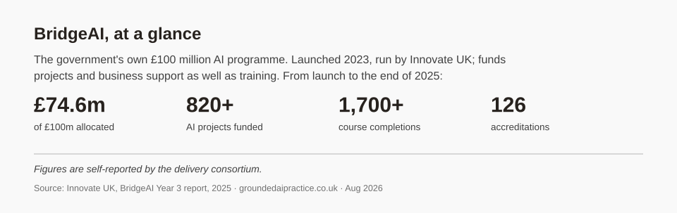
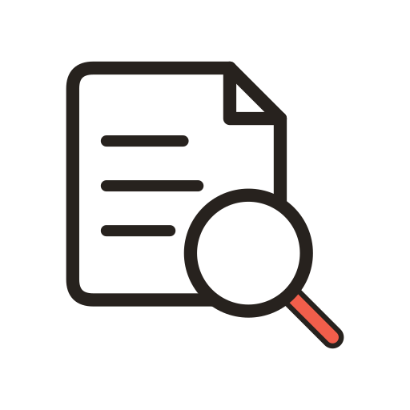
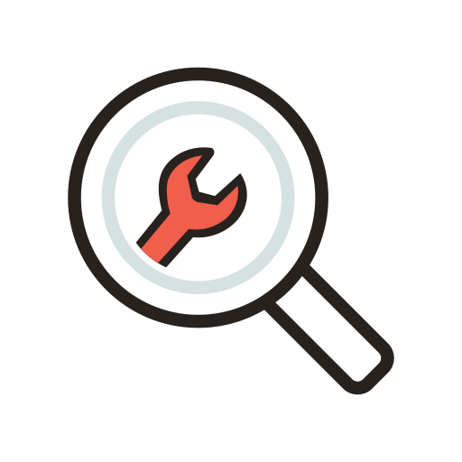
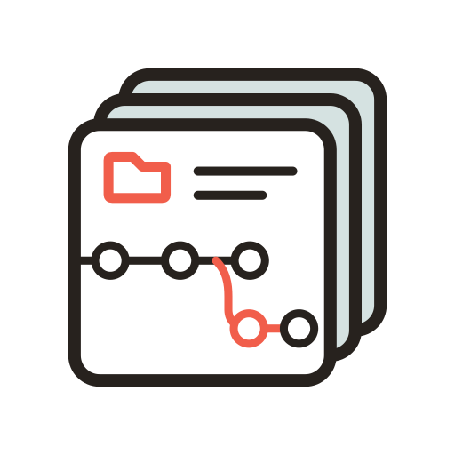
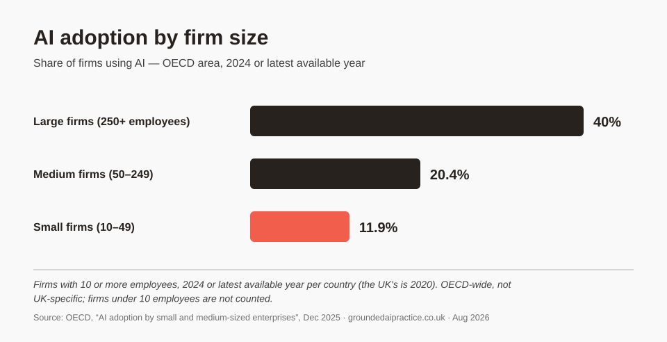

Practical AI capability through responsible, hands-on learning.
Grounded AI Practice is an independent research project on the UK's AI skills gap and what closing it would actually take.
Government documents put AI's value to the country in the hundreds of billions of pounds. Millions of workers have been promised training by 2030. Progress so far is reported in courses completed, not people trained, and the counting is done by the companies that sell the courses. The one number that would settle it (how many people have actually been trained) is not published.
This project researches the gap in the open. Every claim is traced to a source anyone can check, and corrections stay visible instead of being tidied away. The aim is teaching that reaches the people the official numbers say least about: ordinary workers and small organisations.
Counted in courses, promised in people
In June 2025 the government announced a training partnership with eleven technology companies, Microsoft, Google, Amazon and IBM among them, and a promise to train 7.5 million workers in AI by 2030. By January 2026 the promise had grown to 10 million, and the partners had reported just over a million course completions. The two figures are shown apart, because nothing published connects them.

The promise has outlasted the Prime Minister who made it: announced in June 2025, and still standing after a change of Prime Minister a year later.
There is a second set of numbers. BridgeAI is the government's own £100 million AI programme: launched in 2023 and run by Innovate UK, it funds AI projects and business support for firms as well as training. From its launch to the end of 2025 it recorded 1,700 course completions and 126 accreditations, with £74.6 million of its budget allocated. The industry partnership reported a million completions in its first seven months.

Both sets of numbers are published by the government. Neither appears next to the other.
What the figures leave out matters as much as what they show. Nothing published says how many individual people were trained, what counts as a completed course, or which company delivered what. The question here is deliberately narrow: can anyone outside government check these claims? Whether the ambition is right is a separate argument, and it is not the one being made.
Who builds it, and who supplies the evidence
The government commissioned PwC to design, build and run the AI Skills Hub, the platform the training sits on. The White Paper making the case for that work drew its skills-gap evidence mainly from PwC's own surveys. PwC is named as a delivery partner too. All three roles appear in the same government publication.
Government documents put AI's potential at an additional £400 billion for the UK economy by 2030. The Action Plan's footnote for that figure cites research by the consultancy Public First, commissioned by Google. The same consultancy produced a £550 billion figure in a report commissioned by Microsoft. Google and Microsoft are both among the eleven companies delivering the training.
None of this means the figures are wrong. It means the case for the programme, the platform it runs on, and the training itself were supplied by companies with a commercial interest in the answer.
See every source, and whose interest it serves, in the research log
How the research works
Four rules the project runs on. All four are visible in the logs.
Facts and conclusions stay separate
Every log entry sets out what a source actually supports, then what the project concluded from it. Opinion is labelled as opinion.

Every source records who produced it
Government, academic, vendor, campaign group. Tagging them shows when the evidence for a claim comes mostly from people with something to gain from it.

Looking for what would prove it wrong
Anything that could change the project's direction is tested against the evidence that would undermine it, not just the evidence that fits.

Nothing gets quietly changed
Corrections are new entries that point back at what they replace. The reasoning stays readable, mistakes included.
How a claim earns its place
- A claim worth using turns up
- Go to the original source, and record who produced it
- Look for what would prove it wrong, not only what backs it up
- Log what the source actually says, and what it does not
- Use it, with the citation. Or retract it, in the open.
The path every claim takes before the project relies on it.
None of this is aspiration. The logs carry retractions, corrected figures and claims that could not be verified, all left where they are. A project asking for better evidence from government should be able to show its own.
The system behind the research
The most useful thing this project has built is not any single report. It is the way the work is done. The repository holds the project's rules, its logs, and the custom tools built to produce and verify its work, all written so any capable AI assistant can read them and work from them directly. A person reviews every decision. The research on this page came out of that system. The system itself is in the same repository, open to read.
 Working rules and conventions
Working rules and conventions Research and decision logs
Research and decision logs Custom tools
Custom tools Project memory
Project memory
 Research reports
Research reports Learning units
Learning units Custom local tools
Custom local tools
The repository read as a system, rather than as a folder of documents.
The gap is not only who uses AI, but how. A large organisation typically gives models its own data to work from, connects them to the systems it already runs, builds custom agents for specific jobs, and sets rules for how output is checked. A small firm usually gets the chat box. The OECD's case studies describe most small firms using embedded AI tools for peripheral tasks, and among small and medium firms using generative AI, only 29% report using it in their core activities.
How a large organisation typically deploys AI
 Models work from the organisation's own data
Models work from the organisation's own data Connected to the systems it already runs
Connected to the systems it already runs Custom agents for specific jobs, with rules and review
Custom agents for specific jobs, with rules and review
What a small firm usually gets
 A general chat tool, off the shelf
A general chat tool, off the shelf The same model as everyone else, with none of its own context
The same model as everyone else, with none of its own context No agreed rules for checking what comes back
No agreed rules for checking what comes back
Typical patterns rather than universals: the OECD's case studies find small firms at every level of AI maturity.
The direction adopted in August 2026 is to close that gap for small organisations and individuals: proper use of the AI tools now available to them, optimising the context a model is given for each task, and custom tools and workflows built for the job in hand. Some of those run entirely on the organisation's own machines, which cuts usage cost, increases privacy and reduces reliance on cloud services. None of it is exotic. It is the pattern large firms already use, scaled to a small one.

This is a direction, not a finished product. Whether small organisations want this, and what they would pay for, is still an open question, and the log records it as one.
What is being built now
A public report on the UK's AI skills programme
A short report for a general reader: what was promised, what the numbers actually show, and whether anyone outside government can check them. The longer, fully sourced version sits behind it as the evidence companion.
A pilot learning unit on effective prompting
One practical skill, taught properly: what actually happens when you hit send. Sized at 30 to 90 minutes, it moves from a worked example, to guided practice, to doing it yourself. It will be tested with a small group of real learners before anything bigger is built.
The practice system itself
The rules, logs and custom tools this site describes, and the machines they run on. That includes an always-on home server, built and documented step by step so the process itself becomes teaching material.